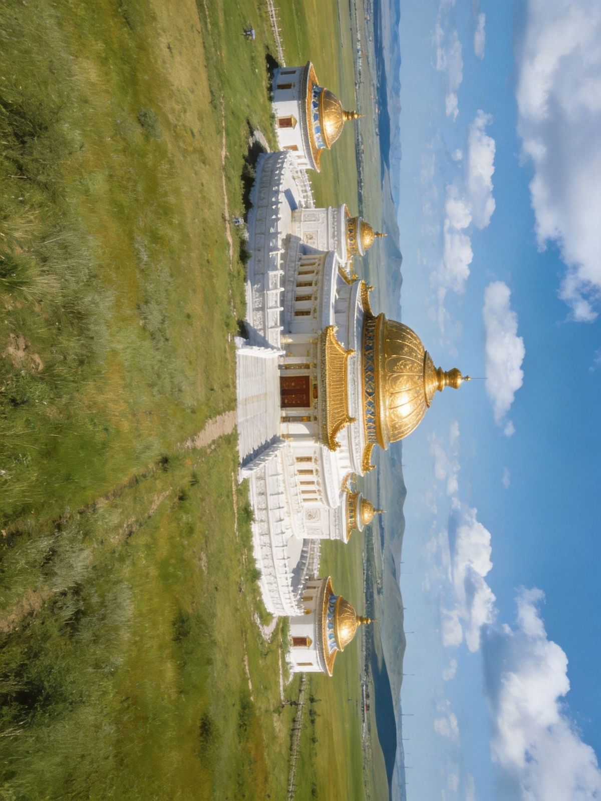
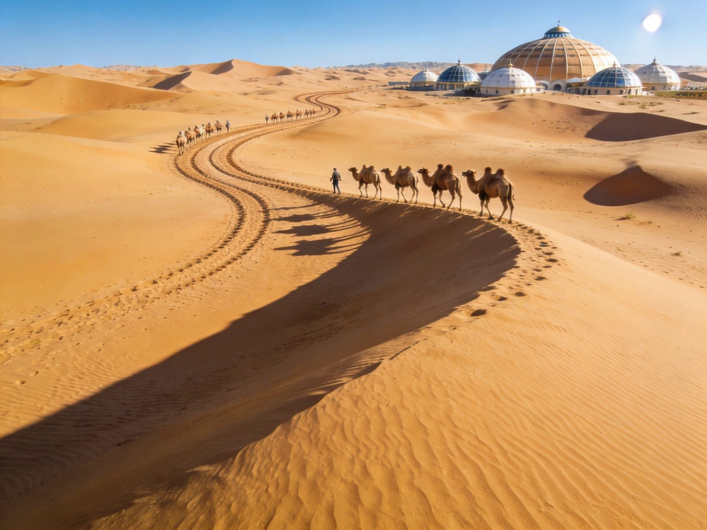
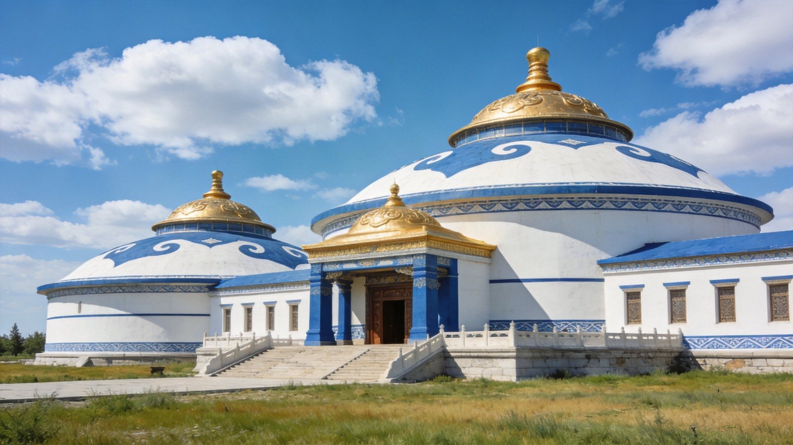
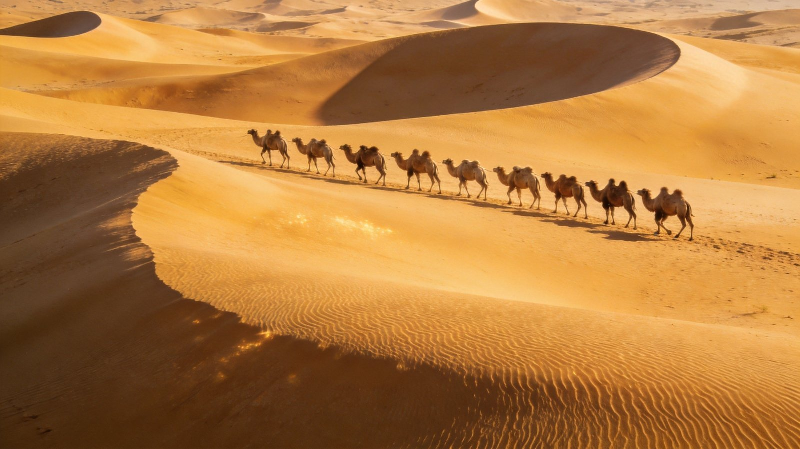

鄂尔多斯 · 草原新城·沙漠与穹顶
康巴什时代一瞥 · 成吉思汗陵祭拜一代天骄 · 响沙湾会唱歌的沙漠
封面
总览
行前
DAY 1
DAY 2
DAY 3
四季
看点
美食
住宿
贴士
安全
WorldStip 旅行小册子
ORDOS · 鄂尔多斯

一代天骄 · 会唱歌的沙漠
鄂尔多斯 · 草原新城
康巴什 × 成吉思汗陵 × 响沙湾
草原新城
人文圣地
沙漠奇观
草原文化
行程 · 自驾 · 住宿 · 美食 · 避坑
沙漠+人文 · 适合 2–4 天
1
/ 12
鄂尔多斯 · 草原新城
行程总览
一条沙漠人文环线
Route & Rhythm
DAY 1
康巴什新城
草原都市广场夜景，宿康巴什
DAY 2
成吉思汗陵
约40km，祭拜一代天骄圣地
DAY 3
响沙湾
约60km，滑沙骑驼观星
DAY 4
库布齐沙漠·返回
沙漠徒步后返程
TIP
从康巴什出发沿
人文+沙漠
展开，景点紧凑、路况好，2–4 天皆宜。

鄂尔多斯 · 草原与大地
2
/ 12
鄂尔多斯 · 草原新城
行前准备
怎么去 · 住哪
Getting There & Staying
✈️ 飞机
鄂尔多斯伊金霍洛机场，直飞北京、上海、广州等；距康巴什约20公里
🚄 火车
包西、呼准鄂铁路交汇，动车达呼和浩特、包头；东胜西站近市区
🚗 自驾
包茂高速(G65)、荣乌高速(G18)贯穿；包头约100km、呼和浩特约160km
🏨 住哪
康巴什新区:都市感强、近景点核心
东胜区:老城烟火、美食聚集
响沙湾:住沙漠度假区看星空
鄂尔多斯城 · 旅程起点
3
/ 12
鄂尔多斯 · 草原新城
DAY 1 · 康巴什
Day 1 · 康巴什新城
Prairie metropolis
D
1
康巴什新区
草原上的现代都市
抵达鄂尔多斯 → 康巴什新区 → 世纪大道·市政广场·喷泉 → 宿康巴什
🏙 康巴什新区
全新草原都市，宽阔大道、恢弘市政广场与喷泉，"鬼城"变"绿城"的城市复兴样本
🏛 鄂尔多斯博物馆
流线型地标建筑，盘点草原历史、蒙古文化与成吉思汗生平
🌃 夜景
夜晚灯光璀璨，城市雕塑与喷泉是散步消夜好去处
TIP
康巴什街道开阔，
骑行或自驾
最省力；夜景务必留到天黑。
康巴什 · 草原新城夜色
4
/ 12
鄂尔多斯 · 草原新城
DAY 2 · 成吉思汗陵
Day 2 · 成吉思汗陵
Shrine of Genghis Khan
D
2
成吉思汗陵
一代天骄的圣地
康巴什 → 成吉思汗陵(约40km) → 祭拜瞻仰 → 返回宿康巴什
⛩ 成吉思汗陵
位于伊金霍洛旗，蒙古包式穹顶金顶陵园庄严肃穆
供奉成吉思汗衣冠与遗物，蒙古族的精神圣地
🎎 祭拜与歌舞
可参与祭拜仪式，观看蒙古族传统歌舞表演，感受悠远历史回响
TIP
陵园肃穆，
着装得体、放缓脚步
；祭拜时段安排上午更佳。

成吉思汗陵 · 金顶穹庐
5
/ 12
鄂尔多斯 · 草原新城
DAY 3 · 响沙湾
Day 3 · 响沙湾
Singing desert
D
3
响沙湾
会"唱歌"的沙漠
康巴什 → 响沙湾(约60km) → 滑沙骑驼看日落 → 宿沙漠度假区
🏜 响沙湾
库布齐沙漠东端 5A 景区，沙粒移动发出"鸣沙"声得名
滑沙、骑骆驼、小火车穿沙
🌌 沙漠星空
远离光害，银河清晰可见，难忘的沙漠之夜
TIP
沙漠
昼夜温差极大
，观星务必备保暖衣物；正午扫码排队提前规划。

响沙湾 · 会唱歌的沙海
6
/ 12
鄂尔多斯 · 草原新城
四季节点
什么时候去
When to visit
🌸
春(5月)
风沙较多、草原渐青，气温回升宜城市游
☀️
夏(6–8月)· 推荐
草原碧绿、沙漠壮阔，夜间沙海观星避暑佳季
🍂
秋(9–10月)· 最佳
天高云淡、草原金黄，沙漠晨昏光影最美
❄️
冬(11–2月)
寒冷风大、草原萧瑟，沙漠景区多歇业宜谨慎
推荐
最经典是
6 月–10 月
，草原绿、沙漠不燥，观星清晰。
一季一景 · 鄂尔多斯
7
/ 12
鄂尔多斯 · 草原新城
必去看点
这些地方别错过
Must-see spots
⭑ 精选看点
⛩
成吉思汗陵
一代天骄衣冠冢，民族圣地
🏜
响沙湾
会唱歌的沙漠，滑沙观星
🏙
康巴什新区
草原新城，广场夜景璀璨
🌊
库布齐沙漠
中国第七大沙漠，徒步挑战
🏛
鄂尔多斯博物馆
流线地标，草原蒙古文化
🏇
那达慕大会
马术摔跤射箭游牧盛会
TIP
人文+沙漠
异地分布
，自驾/包车最省时，雨天博物馆作备选。
沙海与穹顶 · 鄂尔多斯
8
/ 12
鄂尔多斯 · 草原新城
美食清单
一口吃进草原
Taste of the prairie
🥩
烤全羊·手把肉
草原盛宴，羔羊肉鲜嫩多汁
🥛
蒙古奶茶
咸香暖胃，配炒米、奶皮、黄油
🍼
酸奶·奶豆腐
草原奶制品纯正香浓
🌭
血肠·肉肠
蒙古族传统灌肠，独特风味
🥟
羊肉烧麦
皮薄馅足，晨间地道早点
TIP
奶制品与羊肉是草原能量担当；
本地人扎堆
的老店更地道。
城市烟火 · 草原滋味
9
/ 12
鄂尔多斯 · 草原新城
住宿怎么选
住得有草原感
Where to stay
🏙
康巴什新区
都市感强，近市政广场与博物馆核心
🏘
东胜区
老城烟火、美食聚集，住宿性价比高
🏜
响沙湾度假区
沙漠之夜必住，观星+清晨人少
⛺
牧民民宿
草原深处体验游牧生活
TIP
响沙湾沙漠住宿
提前 1–2 天订
，旺季紧张；配置多在景区官方套餐内。
草原夜宿 · 枕星入眠
10
/ 12
鄂尔多斯 · 草原新城
实用贴士
出发前记住这些
Good to know
🏜
沙漠紫外线
风沙大，墨镜、头巾、防晒霜必备
🧥
温差
草原沙漠昼夜温差大，薄外套与保暖衣都要备
🐫
骑骆驼
认准正规项目，听向导指挥，勿自行站立骆驼旁
💳
现金
市区移动支付普及，沙漠景区建议备现金
📷
沙漠迷路
徒步务必跟随向导或走景区路线
⏰
日照长
夏季傍晚落日8点后，行程可排宽松
REMIND
鄂尔多斯与包头/呼和浩特
高铁相连
，可串成内蒙古草原人文大环线。
收拾好行囊 · 出发
11
/ 12
鄂尔多斯 · 草原新城
安全提示
玩得尽兴也安心
Stay safe
☀️
沙漠炎热
夏季地表超40℃，正午避免曝晒，补水防中暑
🏜
沙漠迷路
库布齐深处易迷失方向，无向导严禁独自深入
🚙
沙漠行车
沙路易陷车，四驱低胎压行驶，勿单独进沙地
🧊
昼夜温差
沙漠夜间骤冷，观星露营备足保暖睡袋衣物
🌪
风沙天气
大风沙尘弥漫，戴防护、减少户外时间
⚠️
骑乘安全
骑马骑驼防护到位、听指令，老人儿童量力而行
草原与沙漠 · 愿你乘兴而往 🏜
12
/ 12
鄂尔多斯 · 草原新城 A5 卡片手册 · 由 WorldStip 定制
Insta360
记录美好
记录美好生活
相机指南 · CAMERA GUIDE